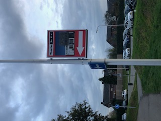

Babs Balletschool huurt de dansstudio van 'Theater de KiK' aan de Dorpsstraat 39 te Elst (OverBetuwe)
Elst ligt centraal gelegen tussen Nijmegen (Noord) en Arnhem (Schuytgraaf) en theater de KiK is midden in het centrum van Elst op loopafstand treinstation en bushaltes.

De KiK is een gebouw waar muziek, dans en theater samenkomen. Er is een theater aan huis. Hier worden diverse voorstellingen gegeven. Ook voor onze eigen dansvoorstellingen maken we gebruik van dit theater.
In de dansstudio van Theater de KiK worden de danslessen gegeven. Het is een fijne grote dansruimte met spiegelwand, een vaste balletbarre en een eigen kleedruimte met toilet. Ook is er een foyer waar u gezellig iets kunt eten en drinken. Op het plaatsje voor de ingang van 'de KiK' (binnen de hekken) kunt u uw auto of fiets parkeren. Voorbij de garage boxen is ook nog een hele grote parkeerplaats (land van Tap) daar kunt u lang parkeren.
 Het gebied rondom de garageboxen is van een andere eigenaar. Gelieve uw auto daar niet te parkeren.